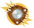
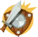
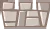
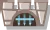
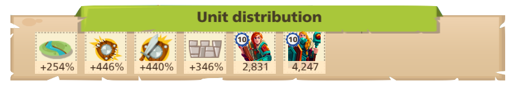
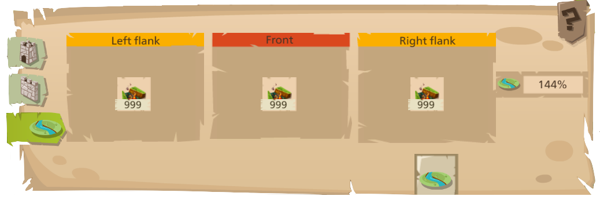
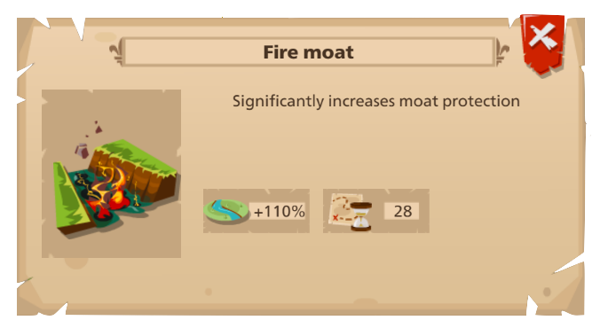
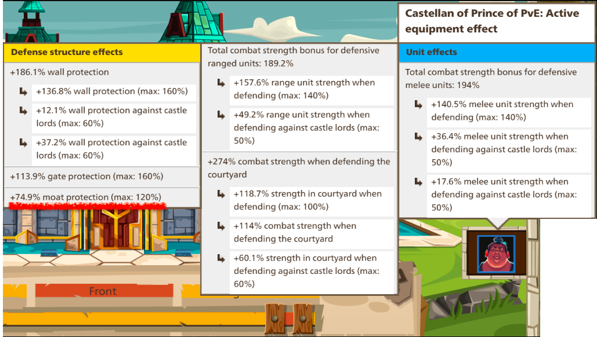

Wall Basics
The wall is divided into three sections: The left flank, the front (flank), and the right flank. Each flank can carry tools which greatly influence the bonuses received on the wall.
{kind=link}
Overview
There are four strength bonuses on each flank: moat , ranged , melee , and wall . There’s also an additional gate bonus  for the front.
{kind=link}
{kind=link}
{kind=link}
{kind=link}
{kind=link}
You can increse your wall protection by upgrading the physical wall in your castle. For example, a level 1 wall grants 30% bonus while the level 8 wall grants 200% bonus.
Likewise, you can increase your gate bonus by upgrading the gate and the moat bonus by upgrading the moat. Simple enough.
Calculating Bonsues
The overview of a flank will display if you hover or click on its corresponding wall section.

{kind=link}
The symbols should be familiar. From left to right: moat bonus, ranged bonus, melee bonus, and wall bonus. Note, the centre flank will have an additional gate bonus.
How are the Numbers Derived?
Let’s start with the moat bonus, 254%.
This castle has a level 3 moat (the ruby one for those wondering), which gives +70% bonus. Remember the tool slots I mentioned earlier? Navigate to the moat tab in your castle defense menu. (If you haven’t unlocked the moat yet, the moat bonus will display as 0% and the tab will be greyed out.)

{kind=link}
I briefly touched on tool bonuses earlier. Well, each flank can slot one type of moat tool (again, assuming it’s actually unlocked). You can stack the tool to 999. Unfortunately, this does not mean the tool’s effectiveness is increased by a factor of 999. Rather, the tool’s bonus will be active for 999 waves of attacks. In other words, every wave of attack against your castle wall consume one tool from each slot.
Tip
It’s generally a good idea to keep your tools at 999 if possible, so their slots aren’t left empty after several attacks.
The tool slotted here is listed below. It’s tool bonus of +110% is now accounted for.

{kind=link}
The Castellan Bonus
So we have +70% from the physical moat and +110% from the tool slot. We’re up to +170%. Fabulous. And where’s the remaining 74%? The last bonus comes from the castle’s castellan. The castellan is an assortment of equipment parts that combine together for powerful bonuses. Let’s take a look at this one through the castle defense menu where we have been exploring. (If you have no idea where I am, click your castle gate, then click on Defense from the selection wheel.)

{kind=link}
Found the missing +74%, sir. (:
So to sum up, 70% (moat) + 110% (tool) + 74% (castellan) = 254%.
The Other Bonuses
Let’s revisit this image from earlier:
Unlike the moat (and the gate), which have their own dedicated tool slots, the ranged, melee, and wall bonuses all fight for the same tool slots. You’ll start with one tool slot for each flank, then gain a slot at wall level 2, 3, and 5 for 4 total slots. The 5th slot can be specially opened for higher level players who prefer defense over offense, but typically you’ll see 4 slots out in the wild.
The wall and gate, like their moat counterpart, both have innate bonuses from their corresponding building structures. Furthermore, any corresponding tools will additionally boost their stats.
Ranged and Melee
Melee and ranged bonuses have no corresponding building structures. Instead, their defense will always start with 100% base power plus tool and castellan bonuses.
Now’s probably a good time to explain what tools are actually being used from this image:
3 quicklimes bombs (+43% melee bonus each). 2 balistrarias (+70% ranged bonus each).
And the breakdown of each calculation:
The ranged bonus is comprised of 100% base + 140% from tools (2 “slits” at +70% each) + 189% from castellan + 17% from sepcial bonuses = 446% total ranged power.
The melee bonus is comprised of 100% base + 129% from tools (3 “bombs” at +43% each) + 194% from castellan + 17% from special bonuses = 440% total melee power.
The “special bonuses” are attributed to the Hall of Legends, a level 70 building also responsible for unlocking the aforementioned 5th tool slot.
You can scroll up and check the ranged and melee bonuses match up with the castellan shown. :3
Now that we have most of the basics down, it’s time to dive into actual combat strategies.
Note
And for those of you still wondering how the wall bonus was calculated, it’s 160% from the wall level and 186% from the cast for a toal of 346%. There are no tools in any of the slots, so there is no tool bonus.